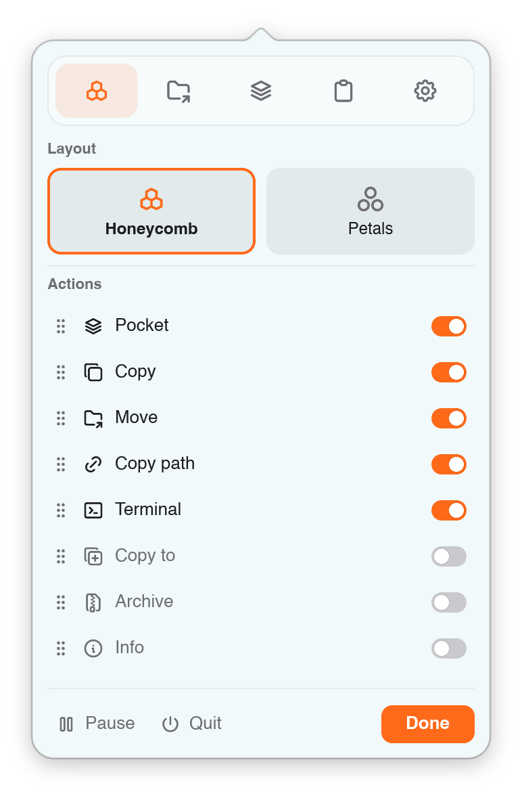
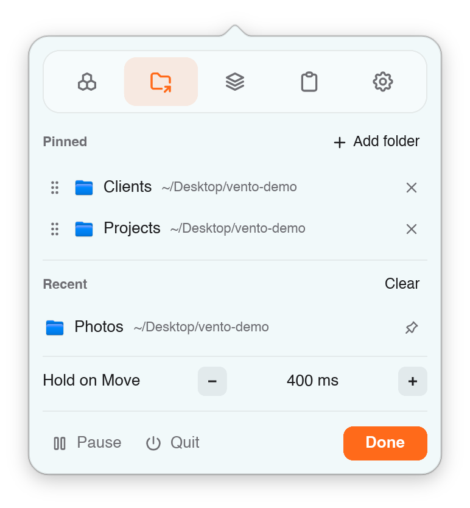

// actions
One wheel, many places to drop.
Each action lives on the wheel. Pick the ones you use, hide the rest.
Park it for later
Release a file on Pocket and it waits in the island at the top of the screen. Drag it out when you reach the folder.
Your folders, one hold away
Hold on Move and a ring of the folders you use opens. Release on one. Changed your mind? Undo.
Zip and unzip in one move
Release a folder to make a zip next to it. Release a zip, rar or 7z to extract it, and a locked one asks for the password.
What's in there?
Size, file count and the biggest files, without opening Get Info. Everything else is one click away in the menu bar.


// settings
Make the wheel yours.
Order the actions, choose your folders, set the hotkeys. One settings window, no account.


// install
First launch takes a minute, once.
Vento isn't signed by Apple yet, so macOS warns you the first time you open it. Here's the way past it.
1 Open Vento, then click Done

2 Privacy and Security → Open Anyway

On macOS 13 or 14: Control-click Vento.app in Applications, choose Open, then Open again.